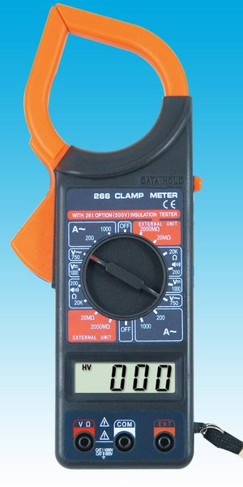

| INGENERÍA ELECTRÓNICA | |
Hay personas que se hipnotizan para desarmar cada aparato electrónico que cae en sus manos, para conocer sus secretos. La ingeniería electrónica es la carrera de esos misterios. Las diversas carreras que abarcan a la gran rama de la ingeniería se hacen específicas en sus contenidos. Es por ello que el caso de la Ingeniería Electrónica no escapa a eso. Es una carrera pensada para aquellos fanáticos del armado y desarmado de los aparatos, para quienes se fascinan con el funcionamiento del hardware y de todo aquello que pueda encontrarse dentro de las distintas áreas de las experiencias que se quiera tener con los sistemas electrónicos. Los ingenieros electrónicos tienen la labor de encargarse y prestar atención al proceso de lo que da forma a un aparato electrónico. ¿Por qué estudiar Ingeniería Electrónica? La profesión de Ingeniería Electrónica se encuadra dentro de las carreras que se encuentran actualizadas con la innovación tecnológica que se vive en estos momentos, y son especialistas necesarios para llevar adelante tanto el desarrollo como los arreglos que sirven para mantener actualizada a la sociedad. ¿Por qué estudiar Ingeniería Electrónica? La carrera de Ingeniería Electrónica es una carrera que brinda conocimientos de distintas temáticas. Es una profesión atractiva para aquellas personas que les gusta un trabajo en particular, pero que se interesan por adquirir conceptos de diversa índole, y así tener la capacidad de realizar diversas tareas. En este sentido, se puede seleccionar la carrera en la entidad educativa que más se adapte a la orientación que se quiera seguir. Algunas universidades se orientan a intereses administrativos, económicos, otras más a lo que hace a la computación, algunas se encuadran en cuestiones generales de los aparatos electrónicos, ciertas entidades también se inclinan por las telecomunicaciones. Con respecto a la variedad de materias que se pueden hallar a lo largo de la cursada, aparece la mecánica, una temática que, en el marco de la carrera, se encuentra ligada a la parte electrónica, especialmente al funcionamiento de los aparatos. Además el profesional tendrá otras materias que le brindarán conceptos que se articulen con la física, la química y la matemática, para adquirir las habilidades necesarias para ser un profesional capaz de llevar adelante los desafíos que le presentan las tareas a realizar. Es una carrera que reparte que ofrece materias que se basan en la teoría y algunas otras que deben abocarse a la práctica, ya que el trabajo de los ingenieros electrónicos en muchas ocasiones se basa en las resoluciones manuales y técnicas que deben realizar. ¿Cuáles son las ventajas y desventajas de la carrera de Ingeniería Electrónica? Como mencionamos anteriormente, la carrera posee una formación completa en una diversidad de ámbitos y es por eso que el profesional se gradúa con distintas habilidades para la ingeniería electrónica. Siguiendo esta línea, el egresado de esta carrera tiene una mayor facilidad a la hora de abordar el mundo laboral, ya que las posibilidades de incorporarse a un puesto de trabajo son amplias. Con respecto a este aspecto mencionado, podemos destacar como una ventaja de la carrera, la posibilidad de desarrollarse en diferentes puestos de trabajo, como en la producción de bienes por ejemplo, y en esa amplitud también se encuentran el tipo de actividades a las que se pueda dedicar la entidad que ofrece el empleo para el ingeniero electrónico. Al ser una carrera dentro del universo de la ingeniería, está considerada en el mundo laboral como una profesión bien rentada. Además le permite al profesional realizar tareas para distintas empresas a la vez, incluso trabajar para alguna entidad y paralelamente realizar labores de manera independiente. Dentro de las desventajas que se pueden presentar a lo largo de la carrera, se destaca la falta de materias prácticas en relación al uso de determinadas herramientas. Algunas universidades dictan la carrera de Ingeniería Electrónica apuntando a cultivar una mayor cantidad de conceptos en el profesional, y terminan inclinando la balanza por materias más teóricas que prácticas. De todas maneras, eso no sucede en todas las entidades educativas. En este sentido, esta desventaja dependerá de la evaluación que haga el estudiante previamente a ingresar a la carrera y elegir el plan de estudios que mejor se adapte a sus intereses. ¿En qué trabajos se puede desempeñar un egresado de Ingeniería Electrónica? Dentro de las virtudes que se pueden destacar de la carrera de Ingeniería Electrónica, se encuentra la capacidad de poder desarrollarse tanto para el ámbito privado como para el sector público, de manera independiente o a través de algún organismo o empresa. Los profesionales pueden realizar labores de consultoría, abocarse a trabajos independientes, trabajando en equipo con otros profesionales y poder así articular sus conocimientos para ofrecer un servicio más completo. Con respecto a este tema, el profesional de la carrera de Ingeniería Electrónica, está habilitado a través de su formación, para desempeñarse en labores tecnológicas que se están desarrollando en las sociedades avanzadas de hoy, como la adecuación de los edificios conocidos como inteligentes, y cómo éstos se manejan gracias a las ventajas de la energía eléctrica. El ingeniero electrónico, entre todas sus habilidades, puede desempeñar sus tareas en plantas nucleares de trabajo o bien en la reparación de elementos tecnológicos. Puede integrar un equipo de investigación para mejorar productos electrónicos, o bien trabajar en el diseño y armado de robots, así como también de automóviles. Es un profesional capacitado para desarrollar circuitos electrónicos y mejorar elementos automatizados. En la actualidad, muchos profesionales se desempeñan en el mundo digital, que progresa continuamente. Por otro lado, la carrera también brinda la posibilidad de trabajar con las conocidas ondas magnéticas, entre otros campos de la electrónica, y es por ello que el profesional es una persona son destrezas particulares, que no solo se puede adaptar a distintos ámbitos laborales, sino también a distintas dificultades en los retos que se le presenten. Puede realizar diseños y reparaciones en elementos pequeños, así como también puede ser solicitado en áreas de gran porte, como Estados o entidades multinacionales que soliciten sus conocimientos para resolver inconvenientes relacionados con lo electrónicos.
|
|
|  | |
| Debes estar informado sobre las carreras y su demanda en el país, para que tomes la mejor decisión. | |
|